This course shows how to measure the loss of a fabricated photonic integrated circuit (PIC) and how to split one measured number into its physical parts: coupling loss, propagation loss and S-bend loss. Each extraction step is paired with the linear algebra it needs.
10 parts7 exercises≈ 3 h of studyprerequisites: logarithms, waveguide modes, basic matrices
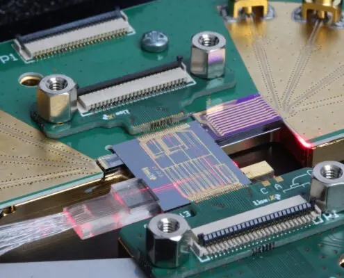
A packaged PIC with an edge-coupled fiber array. The red light marks where the laser enters the chip.
Light enters the chip from a fiber, travels through straight waveguides, bends and devices, and leaves through a second fiber. Every interface and every millimetre of waveguide consumes some optical power. Before a chip can be used in a system, we need to know how much power it loses and which part of the chip is responsible.
The loss budget
A link has a fixed amount of power to spend: the laser provides it, and the detector needs a minimum amount. Everything in between draws on the difference.
+10 dBmLaser
−3 dBInput coupling
−2 dBWaveguides
−4 dBBends & devices
−3 dBOutput coupling
−2 dBmDetector
Illustrative numbers: 10 dBm − 3 − 2 − 4 − 3 dB = −2 dBm arrives at the detector.
Fabrication feedback: propagation loss (dB/cm) reveals sidewall roughness, absorption and leakage of the process.
Design feedback: coupling and bend losses tell the designer whether tapers, radii and offsets work as intended.
How this course works
Read each part in order. Short concept checks test the idea you just read. Exercises generate a new random problem every time and grade your answer; a worked solution opens after you try. A part is marked complete when you move on to a later part; your progress is kept in this browser.
Exercise
Topic
Found in
Exercise 1
dB / dBm warm-up
Part 2
Exercise 2
Insertion loss from meter readings
Part 4
Exercise 3
Cut-back without measurement error
Part 5
Exercise 4
Cut-back with measurement error
Part 6
Exercise 5
Least squares playground (not graded)
Part 6
Exercise 6
S-bend loss from one angle
Part 8
Exercise 7
S-bend components from 10°/20°/30°
Part 9
Part 1 · Introduction
Chip에서 빛이 얼마나, 어디서 손실되는가?
이 강의에서는 제작한 photonic integrated circuit (PIC)의 loss를 측정하는 방법과, 측정한 값 하나를 물리적 성분(coupling loss, propagation loss, S-bend loss)으로 나누는 방법을 배웁니다. 각 추출 단계에는 필요한 선형대수를 함께 다룹니다.
fiber array가 edge coupling된 packaged PIC. 빨간 빛이 laser가 chip으로 들어가는 위치입니다.
빛은 fiber에서 chip으로 들어와 straight waveguide, bend, 각종 소자를 지나 두 번째 fiber로 나갑니다. 모든 interface와 waveguide 1 mm마다 optical power가 조금씩 줄어듭니다. chip을 시스템에 쓰기 전에 power가 얼마나 줄어드는지, 그리고 chip의 어느 부분이 원인인지 알아야 합니다.
Loss budget
링크에는 쓸 수 있는 power가 정해져 있습니다. laser가 power를 공급하고 detector는 최소한의 power가 필요합니다. 그 사이의 모든 요소가 이 차이를 나눠 씁니다.
공정 피드백: propagation loss (dB/cm)는 공정의 sidewall roughness, absorption, leakage를 보여 줍니다.
설계 피드백: coupling loss와 bend loss는 taper, radius, offset 설계가 의도대로 동작하는지 알려 줍니다.
이 강의를 공부하는 방법
각 Part를 순서대로 읽으세요. 짧은 개념 확인으로 방금 읽은 내용을 점검합니다. Exercise는 매번 새로운 랜덤 문제를 만들고 답을 채점하며, 풀어 본 뒤 worked solution을 열 수 있습니다. 다음 Part로 넘어가면 지금 Part가 완료로 표시되고, 진도는 이 브라우저에 저장됩니다.
Exercise
주제
위치
Exercise 1
dB / dBm 기초 연습
Part 2
Exercise 2
측정값으로부터 insertion loss 구하기
Part 4
Exercise 3
측정 오차가 없는 cut-back
Part 5
Exercise 4
측정 오차가 있는 cut-back
Part 6
Exercise 5
Least squares 체험 (채점 없음)
Part 6
Exercise 6
한 각도로 S-bend loss 구하기
Part 8
Exercise 7
10°/20°/30°로 S-bend loss 성분 분리
Part 9
Part 2 · Optical power and the decibel scale
Why loss is written in dB, not mW
Every number in a loss measurement is a power reading or a ratio of two readings. The decibel scale is the language for both.
The instrument at the end of every setup in this course is an optical power meter: an InGaAs photodiode that converts light at 1550 nm into a current and displays the power in mW or directly in dBm. dB is a ratio; dBm is an absolute power referenced to 1 mW.
Both give the same answer, but the dB version needs only additions. A loss budget with ten elements stays a simple column of numbers.
Reason 2: exponential decay becomes a straight line
Propagation loss is exponential: \(P(L) = P_0 e^{-\alpha L}\). In mW the curve bends. In dBm the same data is a straight line whose slope is the loss in dB/cm. This is why cut-back (Part 5) is a straight-line fit.
Linear scale (mW). 1 mW launched, α = 3 dB/cm.
Log scale (dBm): slope = −α.
Reason 3: wide dynamic range
Powers from 1 nW to 10 mW span seven orders of magnitude, but only −60 to +10 dBm. Very small quantities stay readable too. A connector with a return loss of 60 dB reflects \(10^{-6}\) of the power back toward the laser; 15 dB means 3 % is reflected. Part 3 uses both numbers.
3 dB ≈ half the power; 10 dB = one tenth.
dBm − dBm = dB (a loss). dBm ± dB = dBm (a power).
Never add two dBm values. Two 1 mW signals combined give 2 mW = +3.0 dBm, not 0 dBm.
Part 2 · Optical power와 decibel scale
loss를 mW가 아니라 dB로 쓰는 이유
loss 측정의 모든 숫자는 power 측정값이거나 두 측정값의 비율입니다. decibel scale은 이 둘을 표현하는 공통 언어입니다.
이 강의의 모든 setup 끝에는 optical power meter가 있습니다. 1550 nm 빛을 전류로 바꾸는 InGaAs photodiode이며, power를 mW 또는 dBm으로 바로 보여 줍니다. dB는 비율이고, dBm은 1 mW를 기준으로 한 절대 power입니다.
두 방법의 답은 같지만 dB 쪽은 덧셈만 하면 됩니다. 요소가 열 개인 loss budget도 숫자 한 줄로 정리됩니다.
이유 2: 지수 감쇠가 직선이 된다
propagation loss는 지수적입니다: \(P(L) = P_0 e^{-\alpha L}\). mW로 그리면 곡선이지만, dBm으로 그리면 같은 데이터가 직선이 되고 그 slope가 dB/cm 단위의 loss입니다. 그래서 cut-back (Part 5)이 직선 fit 문제가 됩니다.
선형 scale (mW). 1 mW 입사, α = 3 dB/cm.
로그 scale (dBm): slope = −α.
이유 3: 넓은 dynamic range
1 nW에서 10 mW까지는 일곱 자릿수 차이지만 dBm으로는 −60에서 +10까지입니다. 아주 작은 양도 읽기 쉽습니다. return loss가 60 dB인 connector는 power의 \(10^{-6}\)만 laser 쪽으로 반사하고, 15 dB면 3 %를 반사합니다. Part 3에서 두 숫자를 모두 사용합니다.
3 dB ≈ power 절반, 10 dB = 1/10.
dBm − dBm = dB (loss). dBm ± dB = dBm (power).
dBm 두 값을 더하면 안 됩니다. 1 mW 신호 두 개를 합치면 2 mW = +3.0 dBm이지 0 dBm이 아닙니다.
Part 3 · Optical setup and fiber–chip alignment
From the laser to a guided mode in the chip
Light from a DFB laser travels through fiber, connectors and a polarization controller into a fiber block that is butt-coupled to the chip. This part builds that path and aligns it.
Three setups, one measurement
A loss measurement uses three configurations of the same bench, one after the other:
A. Alignment and polarization: couple the input fiber block to the waveguide while watching the chip's output facet with an IR camera, and set the input polarization (Part 4).
B. DUT measurement: replace the lens and camera with an output fiber block and read the transmitted power \(P_\text{DUT}\).
C. Reference measurement: remove the chip, face the two fiber blocks to each other and read \(P_\text{ref}\).
Light source, adapter and polarization controller
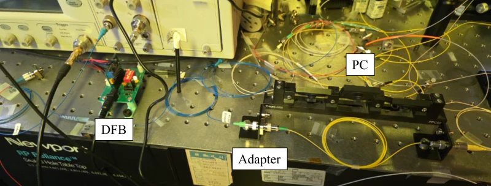
DFB laser, adapter and polarization controller (PC).
Component
Role and practical notes
DFB laser
Single-longitudinal-mode, narrow-linewidth source at 1550 nm. The reference and DUT readings are taken minutes apart and subtracted, so the power must be stable: let the laser warm up.
Adapter
Joins two FC connectors face to face.
Polarization controller (PC)
Sets the polarization of the light in the fiber (Part 4).
Fiber block
Input and output coupling to the chip facets (below).
Power meter
InGaAs photodiode; reads mW or dBm. Use the same wavelength setting, range and averaging for every reading.
A DFB laser is sensitive to back reflection. Light returning into its cavity (optical feedback) causes mode hopping and power fluctuations, so the readings drift. The connector type and the matching gel below both exist to keep reflections small.
FC connectors: PC/UPC vs. APC
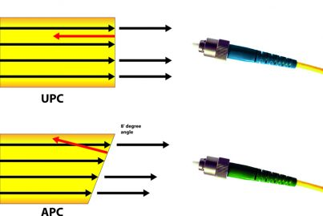
PC (UPC) vs. APC. The 8° angled end face of an APC connector sends the reflection out of the core.
PC and UPC connectors have a flat (slightly domed) polished fiber end. APC (angled physical contact) connectors are polished at an angle, typically 8°.
Two mating fibers are never perfectly aligned, and the polished end faces reflect some light backward. With a PC connector this light goes straight back into the source. With an APC connector the angle sends it into the cladding, where the fiber jacket absorbs it; it does not return to the source.
PC / UPC
APC
End face
flat (slightly domed)
8° angle
Typical return loss
PC ≈ 40 dB, UPC ≈ 50 dB
≥ 60 dB
Usual boot colour
blue
green
Never mix them. Mating an APC connector with a PC connector leaves an air gap between the cores: several dB of loss, strong reflection, and possible damage to the end faces. Connect APC to APC and PC to PC only.
Fresnel reflection and index-matching gel
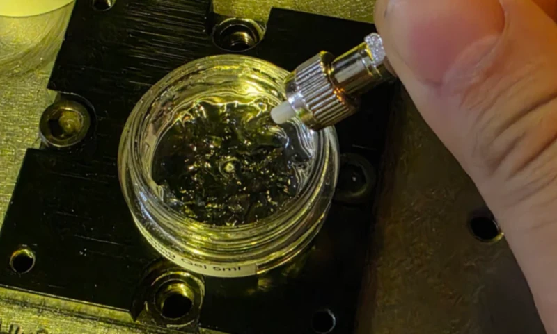
Index-matching gel applied to an FC connector before it goes into the adapter.
Even in an adapter a thin air gap can remain between the two end faces. At every boundary between two refractive indices part of the light is reflected: Fresnel reflection. At normal incidence
An air gap has two such surfaces, so about 0.3 dB is lost and the reflected light heads back to the laser. Light bouncing between the two surfaces also forms a small Fabry–Perot cavity, so the transmitted power ripples with wavelength and gap distance. Index-matching gel with the same index as the fiber fills the gap and makes the boundaries optically disappear.
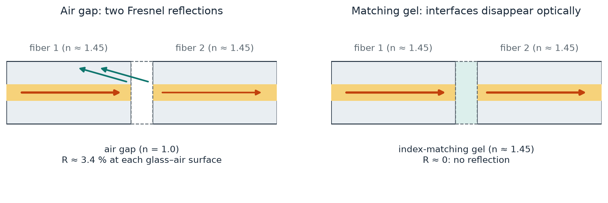
An air gap gives two Fresnel reflections; matching gel removes them.
For the same reason index-matching oil is used between the fiber block and the chip facet. It also reduces the facet part of the coupling loss studied in Part 5.
Fiber block and PIC device
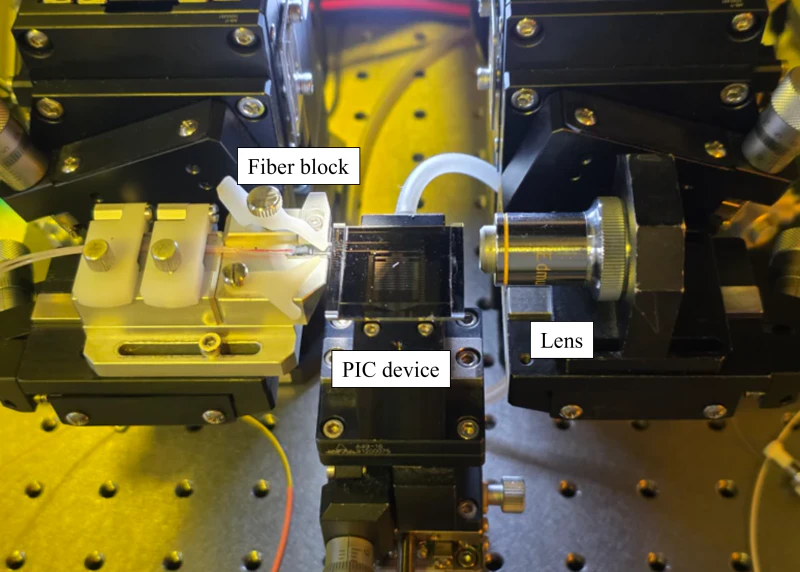
Setup A: input fiber block, PIC device and imaging lens.
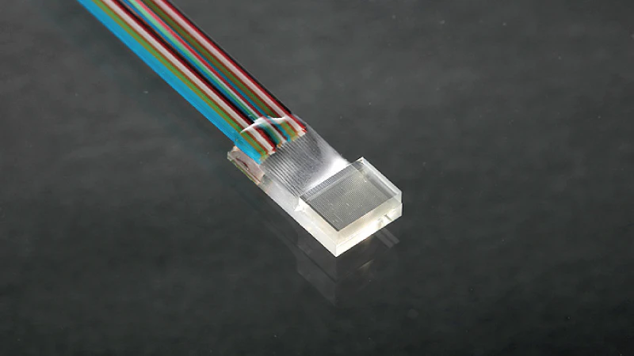
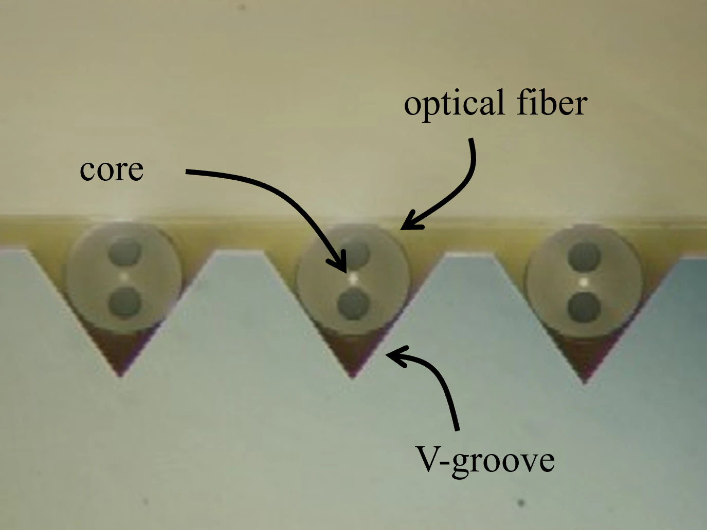
End face of a fiber block: each fiber sits in a V-groove; the bright dot is the core.
A fiber block (fiber array) is a glass plate with precisely etched V-grooves, typically at 127 µm or 250 µm pitch. Single-mode fibers are fixed in the grooves and the end face is polished.
The fiber positions are fixed, so alignment is more stable and repeatable than with a bare fiber.
Several channels can be aligned at once.
The wide flat end face is easy to set parallel to the chip facet and holds the matching oil.
The fiber blocks sit on multi-axis stages (x, y, z and tilt); the chip sits on the stage in the middle.
Aligning the fiber block to the waveguide
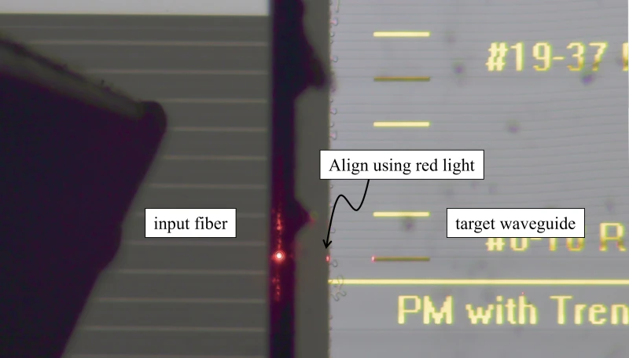
Coarse alignment with red light: the input fiber is moved to the target waveguide.
Apply matching oil between the fiber block and the chip input facet.
Coarse alignment with red light. 1550 nm light is invisible and the cores are only micrometres wide. Launch visible red light into the fiber and, under the microscope, move the glowing fiber core onto the target waveguide.
Image the output facet. Switch back to the 1550 nm DFB laser. A lens images the chip's output facet onto an IR camera.
Maximize the guided mode. When the fiber is on the core, the camera shows the waveguide mode as a bright spot. Step x, y and z until the spot is brightest. Move slowly in z so the fiber block never touches the chip.
The camera image tells you where the fiber is:
Part 3 · 광학 setup과 fiber–chip 정렬
Laser에서 chip 안의 guided mode까지
DFB laser의 빛은 fiber, connector, polarization controller를 지나 chip에 butt coupling된 fiber block으로 들어갑니다. 이 Part에서는 그 경로를 구성하고 정렬합니다.
측정 하나, setup 세 가지
loss 측정은 같은 bench를 세 가지 구성으로 차례로 사용합니다.
A. 정렬·편광 조정: IR camera로 chip의 output facet을 보면서 input fiber block을 waveguide에 coupling하고, 입력 편광을 맞춥니다 (Part 4).
B. DUT 측정: lens와 camera 대신 output fiber block을 붙여 통과 power \(P_\text{DUT}\)를 읽습니다.
C. Reference 측정: chip을 빼고 fiber block 두 개를 마주 보게 맞대어 \(P_\text{ref}\)를 읽습니다.
광원, adapter, polarization controller
DFB laser, adapter, polarization controller (PC).
구성 요소
역할과 실무 참고 사항
DFB laser
1550 nm single-longitudinal-mode, narrow-linewidth 광원. reference와 DUT 측정을 몇 분 간격으로 하고 빼기 때문에 power가 안정해야 합니다. 충분히 warm-up 하세요.
Adapter
FC connector 두 개를 마주 보게 연결합니다.
Polarization controller (PC)
fiber 안 빛의 편광을 맞춥니다 (Part 4).
Fiber block
chip facet에 빛을 넣고 받는 부품 (아래 설명).
Power meter
InGaAs photodiode로 mW 또는 dBm을 읽습니다. 모든 측정에서 같은 파장 설정, range, averaging을 쓰세요.
DFB laser는 back reflection에 민감합니다. 빛이 laser cavity로 되돌아오면 (optical feedback) mode hopping과 power 흔들림이 생겨 측정값이 drift합니다. 아래의 connector 종류와 matching gel은 모두 반사를 작게 유지하기 위한 것입니다.
FC connector: PC/UPC와 APC
PC(UPC)와 APC. APC는 단면이 8° 기울어져 있어 반사광이 core 밖으로 빠집니다.
두 fiber를 연결하면 정렬이 아주 조금 어긋나고, 연마된 단면에서 빛 일부가 반대 방향으로 반사됩니다. PC connector에서는 이 빛이 그대로 광원으로 돌아갑니다. APC connector에서는 기울어진 단면 때문에 반사광이 cladding 쪽으로 꺾여 fiber jacket에서 흡수되므로 광원으로 돌아가지 않습니다.
PC / UPC
APC
단면
평면 (약간 볼록)
8° 경사
대표 return loss
PC ≈ 40 dB, UPC ≈ 50 dB
≥ 60 dB
보통의 boot 색
파란색
초록색
혼용 금지. APC와 PC를 연결하면 core끼리 맞닿지 않고 air gap이 생깁니다. 수 dB 이상의 loss와 큰 반사가 생기고 단면이 손상될 수 있습니다. 반드시 APC–APC, PC–PC로만 연결하세요.
Fresnel reflection과 index-matching gel
adapter에 연결하기 전 FC connector 단면에 index-matching gel을 바르는 모습.
adapter로 연결해도 두 단면 사이에 얇은 air gap이 남을 수 있습니다. 굴절률이 다른 두 매질의 경계에서는 빛 일부가 반사되는데, 이것이 Fresnel reflection입니다. 수직 입사에서
air gap에는 이런 면이 두 개 있으므로 약 0.3 dB가 사라지고 반사광은 laser로 돌아갑니다. 두 면 사이를 빛이 왕복하면 작은 Fabry–Perot cavity가 되어, 파장과 gap 거리에 따라 투과 power가 ripple처럼 출렁입니다. fiber와 굴절률이 같은 index-matching gel로 gap을 채우면 경계가 광학적으로 사라집니다.
air gap에서는 두 면에서 Fresnel reflection이 생기고, matching gel을 채우면 사라집니다.
같은 이유로 fiber block과 chip facet 사이에는 index-matching oil을 씁니다. 이것은 Part 5에서 다루는 coupling loss 중 facet 반사 부분도 줄여 줍니다.
fiber block 단면: 각 fiber가 V-groove에 놓여 있고, 밝은 점이 core입니다.
Fiber block (fiber array)은 유리 기판에 V-groove를 정밀하게 파고 (pitch는 보통 127 µm 또는 250 µm) single-mode fiber를 고정한 뒤 단면을 연마한 부품입니다.
fiber 위치가 고정되어 맨 fiber보다 정렬이 안정적이고 재현성이 좋습니다.
여러 채널을 한 번에 정렬할 수 있습니다.
넓고 평평한 단면은 chip facet과 평행을 맞추기 쉽고 matching oil을 잘 붙잡아 둡니다.
fiber block은 multi-axis stage(x, y, z, 기울기) 위에, chip은 가운데 stage 위에 놓습니다.
Fiber block을 waveguide에 정렬하기
red light로 대략 정렬: input fiber를 target waveguide 위치로 옮깁니다.
fiber block과 chip input facet 사이에 matching oil을 바릅니다.
Red light로 대략 정렬. 1550 nm 빛은 보이지 않고 core는 수 µm에 불과합니다. fiber에 visible red light을 넣고 현미경으로 보면서, 빛나는 fiber core를 target waveguide 입구로 옮깁니다.
Output facet 관찰. 광원을 1550 nm DFB laser로 바꿉니다. lens로 chip output facet의 상을 IR camera에 맺습니다.
Guided mode가 가장 밝게. fiber가 core에 맞으면 camera에 waveguide mode가 밝은 점으로 보입니다. x, y, z를 조금씩 움직여 점이 가장 밝은 위치를 찾습니다. fiber block이 chip에 부딪히지 않도록 z는 천천히 움직이세요.
camera 영상을 보면 fiber가 어디에 있는지 알 수 있습니다.
Part 4 · Polarization and insertion loss
Set TE, read two powers, subtract
With the fiber coupled, two steps remain: fix the input polarization, then measure the power with and without the chip.
TE and TM modes
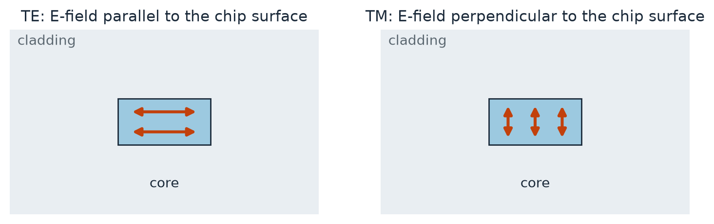
TE: E-field parallel to the chip surface. TM: E-field perpendicular to it.
A waveguide's guided modes split by E-field direction into TE and TM. The two have different effective index, propagation loss, bending loss and coupling loss, so loss is always measured for a defined polarization, usually TE and TM separately. Standard single-mode fiber does not hold polarization: after a few metres of fiber the polarization is an unknown ellipse. The polarization controller turns it into the state we want.
The 3-paddle polarization controller
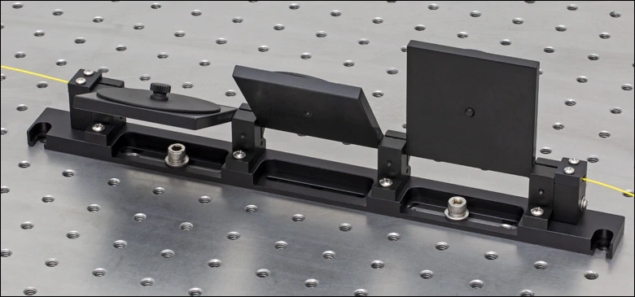
3-paddle polarization controller (PC).
The fiber is wound a few times around each of three paddles.
Bend-induced birefringence. Bending squeezes the inner side of the fiber and stretches the outer side, so the index differs for the two polarizations in and perpendicular to the bend plane. For a fiber of cladding radius \(r\) wound with radius \(R\):
\[\Delta n \approx 0.133\left(\frac{r}{R}\right)^2, \qquad \Gamma = \frac{2\pi}{\lambda}\,\Delta n\,(2\pi R N)\]
where \(N\) is the number of loops and \(\Gamma\) the retardance (H. C. Lefevre, Electron. Lett. 16, 778 (1980)).
- Each paddle is a waveplate. Loop count and paddle diameter are chosen so the paddles act as λ/4, λ/2 and λ/4 plates at the design wavelength.
- Turning a paddle rotates the fast axis. Three angles are enough to turn any input polarization into any output polarization.
Polarization control with waveplates (Jones calculus)
A polarization state is the Jones vector \(\mathbf{E} = (E_x, E_y)^\mathsf{T}\) of the TE (x) and TM (y) field components. A waveplate with retardance \(\Gamma\) and fast axis at angle \(\theta\) acts as
λ/4 plate (\(\Gamma = \pi/2\)): with its fast axis on the major axis of an ellipse it turns elliptical into linear polarization; linear light at 45° becomes circular.
λ/2 plate (\(\Gamma = \pi\)): rotates a linear polarization by \(2\theta\) and keeps it linear.
Paddle 1 (λ/4): turns the unknown ellipse from the fiber into a line.
Paddle 2 (λ/2): rotates the line to the wanted direction, e.g. x for TE.
Paddle 3 (λ/4): aligned with that line it keeps it linear; at other angles it makes any wanted ellipse.
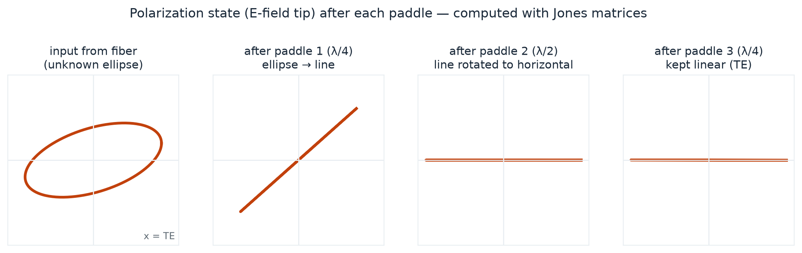
Polarization after each paddle, computed with Jones matrices: ellipse → line → TE-oriented line.
The fiber between the PC and the chip changes the polarization again, so the paddle angles are not calculated in practice. They are adjusted while watching the chip output, as follows.
Setting the input polarization to TE
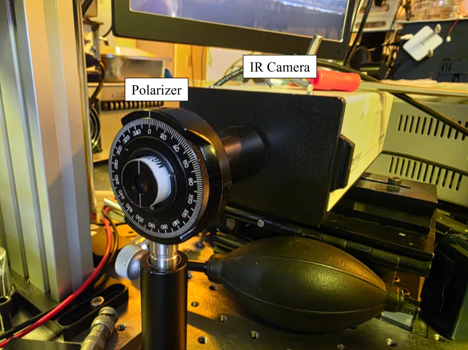
A polarizer (analyzer) between the lens and the IR camera.
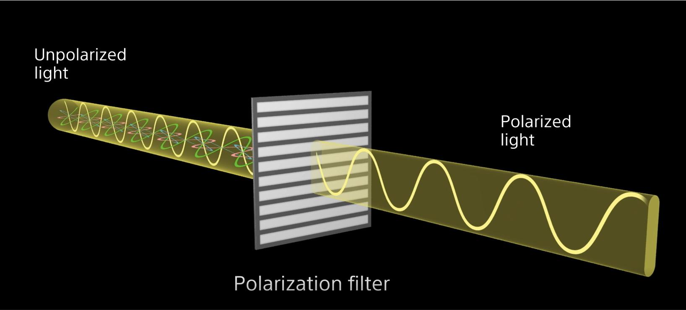
A polarizer passes only one linear polarization component.
A polarizer passes only one linear polarization. Light polarized at angle \(\phi\) to its transmission axis is transmitted according to Malus's law, \(I = I_0\cos^2\phi\).
Couple the input light into a straight waveguide (Part 3).
Set the polarizer to TM-pass and place it in front of the camera. Used this way it is called an analyzer.
Watch the waveguide mode on the camera and turn the PC paddles until the spot disappears: the output has no TM component.
The input polarization is now TE.
For TM, set the analyzer to TE-pass and repeat.
Why this works: in a straight waveguide TE and TM are eigenmodes that do not exchange power. No TM at the output means the input coupled only into the TE mode. Bends or asymmetric structures can convert TE↔TM, so always set the polarization on a straight waveguide.
Keep the fiber still. After setting the polarization, do not touch the fiber between the PC and the fiber block. Moving or bending it changes the polarization again; tape it down.
Replace the lens and camera with the output fiber block; use matching oil on this facet too.
Keep the input alignment and align the output fiber block to the waveguide exit.
Fine-tune the input and output blocks alternately until the power meter reaches its maximum.
Record the maximum as \(P_\text{DUT}\) (dBm). Re-align and repeat a few times, then average.
The reference measurement (setup C)
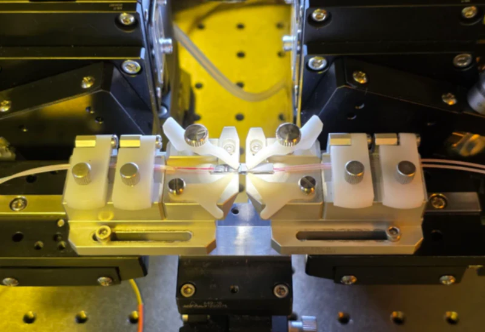
Setup C: fiber block aligned to fiber block, chip removed.
To know the loss of the chip we need the power that arrives without the chip. Taking the laser's output power as the input would add the excess loss of the connectors, adapter, PC and fiber to the chip's loss. Instead, remove the chip and face the two fiber blocks to each other. Identical single-mode fibers have identical modes, so ideally their coupling loss is zero, and this reading contains every loss except the chip.
Example: \(P_\text{ref} = +2.50\) dBm and \(P_\text{DUT} = -4.30\) dBm give \(\mathrm{IL} = 2.50 - (-4.30) = 6.80\) dB. This number includes both fiber–chip interfaces and everything on the chip.
Sign. \(P_\text{DUT} - P_\text{ref}\) is negative. This course writes loss as a positive number, \(P_\text{ref} - P_\text{DUT}\).
Between the reference and the DUT reading, keep everything else fixed; any change shows up directly as loss error:
connectors (re-plugging an adapter can change the loss by a few hundredths to tenths of a dB),
PC paddle positions and fiber routing (polarization),
power-meter wavelength setting, range and averaging.
Measuring the reference before and after the DUT shows whether the laser drifted.
Step
Check
Source
DFB warmed up, APC–APC connections, matching gel in the adapters
Alignment
matching oil, coarse alignment with red light, brightest mode spot on the IR camera
Polarization
analyzer shows zero TM on a straight waveguide (for TE), fiber taped down
DUT
output block aligned, maximum \(P_\text{DUT}\) recorded, repeated
Reference
blocks aligned to each other, \(P_\text{ref}\) recorded, connectors, PC and meter unchanged
fiber가 coupling되면 두 단계가 남습니다. 입력 편광을 정하고, chip이 있을 때와 없을 때의 power를 측정합니다.
TE mode와 TM mode
TE: E-field가 chip 표면과 평행. TM: 수직.
waveguide의 guided mode는 E-field 방향에 따라 TE와 TM으로 나뉩니다. 두 mode는 effective index, propagation loss, bending loss, coupling loss가 모두 다르므로, loss는 항상 편광을 정해서 측정하고 보통 TE와 TM을 따로 측정합니다. 일반 single-mode fiber는 편광을 유지하지 않아서 fiber를 몇 m 지나면 편광이 알 수 없는 타원이 됩니다. 이것을 원하는 상태로 바꾸는 것이 polarization controller입니다.
\[\Delta n \approx 0.133\left(\frac{r}{R}\right)^2, \qquad \Gamma = \frac{2\pi}{\lambda}\,\Delta n\,(2\pi R N)\]
이며 \(N\)은 감은 횟수, \(\Gamma\)는 retardance입니다 (H. C. Lefevre, Electron. Lett. 16, 778 (1980)).
- 각 paddle은 waveplate. 감는 횟수와 paddle 지름을 골라 사용 파장에서 λ/4, λ/2, λ/4 plate가 되도록 만듭니다.
- paddle 회전 = fast axis 회전. 세 각도만으로 어떤 입력 편광이든 원하는 출력 편광으로 바꿀 수 있습니다.
Waveplate를 이용한 편광 제어 (Jones calculus)
편광 상태는 TE(x), TM(y) 성분으로 된 Jones vector \(\mathbf{E} = (E_x, E_y)^\mathsf{T}\)로 나타냅니다. retardance \(\Gamma\), fast axis 각도 \(\theta\)인 waveplate는
Paddle 3 (λ/4): 선과 나란히 두면 선편광을 유지하고, 다른 각도로 두면 원하는 타원을 만듭니다.
각 paddle을 지난 뒤의 편광 (Jones matrix로 계산): 타원 → 선 → TE 방향 선.
PC와 chip 사이의 fiber가 편광을 다시 바꾸기 때문에, 실제로는 paddle 각도를 계산하지 않고 chip 출력을 보면서 아래 순서로 맞춥니다.
입력 편광을 TE로 맞추기
lens와 IR camera 사이에 둔 polarizer (analyzer).polarizer는 한 방향의 선편광 성분만 통과시킵니다.
Polarizer는 한 방향의 선편광만 통과시킵니다. 투과축과 \(\phi\)만큼 어긋난 선편광은 Malus's law \(I = I_0\cos^2\phi\)에 따라 투과됩니다.
입력광을 straight waveguide에 coupling합니다 (Part 3).
polarizer를 TM-pass로 맞추고 camera 앞에 둡니다. 이렇게 쓰는 polarizer를 analyzer라고 부릅니다.
camera의 waveguide mode를 보면서 PC paddle을 돌려 점이 사라지는 위치를 찾습니다. 이때 출력에 TM 성분이 없습니다.
그러면 입력 편광이 TE로 맞춰진 것입니다.
TM으로 맞추려면 analyzer를 TE-pass로 놓고 같은 과정을 반복합니다.
이 방법이 맞는 이유: straight waveguide에서 TE와 TM은 서로 power를 주고받지 않는 eigenmode입니다. 출력에 TM이 없다면 입력광이 TE mode에만 coupling된 것입니다. bend나 비대칭 구조는 TE↔TM conversion을 일으킬 수 있으므로 편광은 반드시 straight waveguide에서 맞춥니다.
fiber를 움직이지 마세요. 편광을 맞춘 뒤에는 PC와 fiber block 사이의 fiber를 건드리지 마세요. 움직이거나 휘면 편광이 다시 바뀝니다. 테이프로 고정해 두세요.
input 정렬은 그대로 두고 output fiber block을 waveguide 출구에 정렬합니다.
power meter가 최대가 될 때까지 input과 output block을 번갈아 미세 조정합니다.
최댓값을 \(P_\text{DUT}\) (dBm)로 기록합니다. 다시 정렬해서 몇 번 반복하고 평균을 냅니다.
Reference 측정 (setup C)
Setup C: chip을 빼고 fiber block끼리 정렬.
chip의 loss를 알려면 chip이 없을 때 도달하는 power가 필요합니다. laser 출력 power를 입력으로 정하면 connector, adapter, PC, fiber의 excess loss가 chip의 loss에 더해집니다. 대신 chip을 빼고 fiber block 두 개를 마주 보게 정렬합니다. 같은 single-mode fiber끼리는 mode가 같아 이론적으로 coupling loss가 0이므로, 이 측정값에는 chip을 뺀 모든 loss가 들어 있습니다.
Insertion loss is the only quantity we can measure directly. The cut-back method splits it into its parts.
For a straight waveguide two mechanisms dominate:
Coupling loss CL (dB/facet): mode-size mismatch between fiber and waveguide, Fresnel reflection, facet roughness and misalignment. It occurs twice, at input and output.
Propagation loss α (dB/cm): sidewall scattering, material absorption and substrate leakage. It grows with the chip length \(L\).
\[\mathrm{IL} = \alpha\,L + 2\,\mathrm{CL}\]
Two unknowns, two chips
Two chips of different length give two equations. Subtracting them removes the coupling term:
Example: 1.0 cm with 1.10 dB and 2.5 cm with 1.40 dB give α = 0.20 dB/cm and CL = 0.45 dB/facet.
Measurement error
Real readings fluctuate: fiber alignment is never reproduced exactly, each cleaved facet differs, the laser drifts, polarization changes. With only two points, all of that error goes into the slope. A ±0.05 dB error on two chips 1 cm apart gives up to ±0.10 dB/cm error in α, which is 50 % of a 0.2 dB/cm waveguide. The cure is more lengths and a least-squares fit (Part 6).
Cut-back by asymmetric cleaving
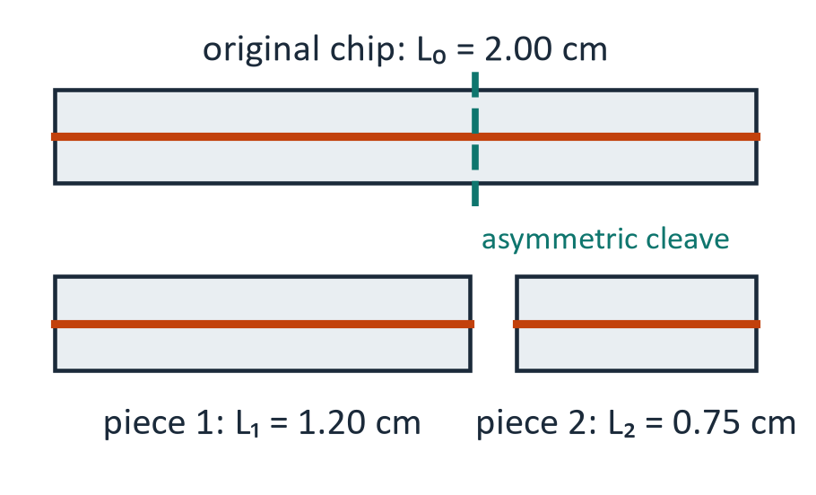
One chip, three lengths: the original chip and the two pieces of an asymmetric cleave.
Measure the original chip: \(L_0 \to \mathrm{IL}_0\).
Cleave it asymmetrically so that \(L_1 \ne L_2\). A symmetric cleave would give only two distinct lengths.
Measure both pieces: \(L_1 \to \mathrm{IL}_1\), \(L_2 \to \mathrm{IL}_2\).
Plot IL against L and fit a straight line: slope = α, intercept = 2·CL.
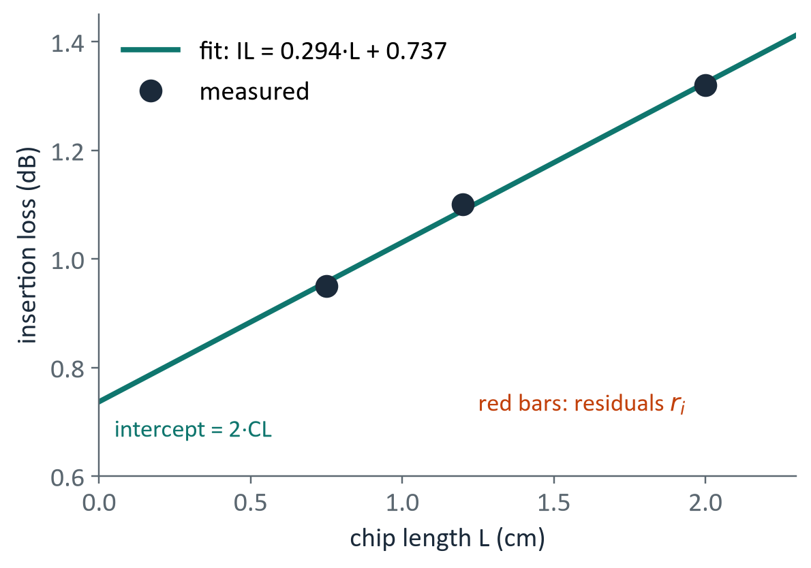
L = 2.00, 1.20, 0.75 cm and IL = 1.32, 1.10, 0.95 dB give α = 0.294 dB/cm and 2·CL = 0.737 dB, so CL = 0.368 dB/facet.
Part 5 · Insertion loss 분해
Coupling loss와 propagation loss
직접 측정할 수 있는 것은 insertion loss뿐입니다. cut-back method로 이것을 성분별로 나눕니다.
straight waveguide에서는 두 메커니즘이 지배적입니다:
Coupling loss CL (dB/facet): fiber와 waveguide 사이의 mode 크기 mismatch, Fresnel reflection, facet roughness, misalignment. 입력과 출력에서 두 번 발생합니다.
Propagation loss α (dB/cm): sidewall scattering, material absorption, substrate leakage. chip 길이 \(L\)에 비례해 커집니다.
\[\mathrm{IL} = \alpha\,L + 2\,\mathrm{CL}\]
미지수 둘, chip 둘
길이가 다른 chip 두 개로 식 두 개를 얻습니다. 두 식을 빼면 coupling 항이 사라집니다:
실제 측정값은 흔들립니다. fiber 정렬은 매번 똑같이 재현되지 않고, cleave한 facet마다 상태가 다르며, laser가 drift하고 polarization도 바뀝니다. 점이 두 개뿐이면 이 오차가 모두 slope로 들어갑니다. 1 cm 떨어진 두 chip에 ±0.05 dB 오차가 있으면 α에 최대 ±0.10 dB/cm 오차가 생기고, 이는 0.2 dB/cm waveguide의 50 %입니다. 해결책은 길이를 늘리고 least-squares fit을 쓰는 것입니다 (Part 6).
비대칭 cleave를 이용한 cut-back
chip 하나로 길이 세 개: 원래 chip과 비대칭 cleave로 나온 두 조각.
원래 chip을 측정합니다: \(L_0 \to \mathrm{IL}_0\).
비대칭으로 cleave해서 \(L_1 \ne L_2\)가 되게 합니다. 대칭으로 자르면 서로 다른 길이가 두 개뿐입니다.
두 조각을 측정합니다: \(L_1 \to \mathrm{IL}_1\), \(L_2 \to \mathrm{IL}_2\).
IL을 L에 대해 그리고 직선을 fit합니다: slope = α, intercept = 2·CL.
L = 2.00, 1.20, 0.75 cm, IL = 1.32, 1.10, 0.95 dB에서 α = 0.294 dB/cm, 2·CL = 0.737 dB, 따라서 CL = 0.368 dB/facet.
Part 6 · Linear Algebra I
Linear regression from the normal equations
Three noisy equations, two unknowns: what does "the best line" mean?
An overdetermined system
Write each cut-back measurement as a linear equation in \(\alpha\) and \(c = 2\,\mathrm{CL}\):
There are more equations (m = 3) than unknowns (n = 2). Because of noise, \(b\) does not lie in the column space of \(A\), so no \(x\) satisfies all three equations.
Least squares
Define the residual \(r = b - Ax\) and choose \(x\) to minimize its squared length:
Squares are used because \(E\) is a smooth bowl with one minimum, large deviations count more than small ones, signs cannot cancel, and for Gaussian noise the result is the maximum-likelihood estimate.
Residuals are −0.004, +0.011 and −0.007 dB: small compared with the losses, so the line fits well.
Geometric view: an orthogonal projection
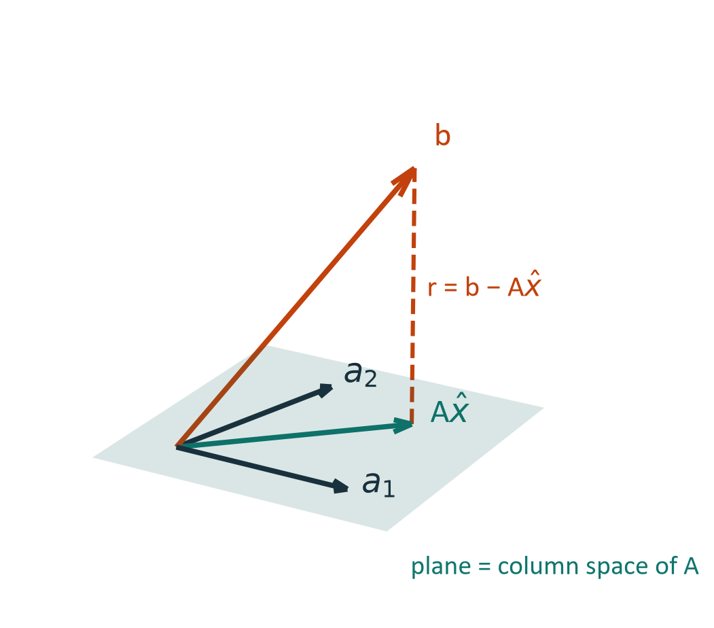
The columns of \(A\) span a plane, the column space. Every \(Ax\) lies in it. The best \(A\hat x\) is the orthogonal projection of \(b\) onto that plane, and the residual is perpendicular to it:
\[A^\mathsf{T}(b - A\hat x) = 0\]
This is exactly the normal equations. The picture holds for any number of unknowns.
Part 6 · Linear Algebra I
Normal equations로 푸는 linear regression
noise가 있는 식 세 개, 미지수 두 개: "가장 좋은 직선"이란 무엇일까요?
Overdetermined system
cut-back 측정 하나하나를 \(\alpha\)와 \(c = 2\,\mathrm{CL}\)에 대한 일차식으로 씁니다:
residual은 −0.004, +0.011, −0.007 dB로 loss 값에 비해 작으므로 직선이 잘 맞습니다.
기하학적 해석: orthogonal projection
\(A\)의 열들은 하나의 평면, 즉 column space를 만듭니다. 모든 \(Ax\)는 이 평면 위에 있습니다. 가장 좋은 \(A\hat x\)는 \(b\)를 이 평면에 orthogonal projection한 점이고, residual은 평면에 수직입니다:
\[A^\mathsf{T}(b - A\hat x) = 0\]
이것이 바로 normal equations입니다. 미지수가 몇 개든 같은 그림이 성립합니다.
Part 7 · S-bend loss: physical origins
Three ways an S-bend loses light
An S-bend shifts a waveguide sideways with two circular arcs of opposite curvature, each of angle θ, so the total bend angle is 2θ.
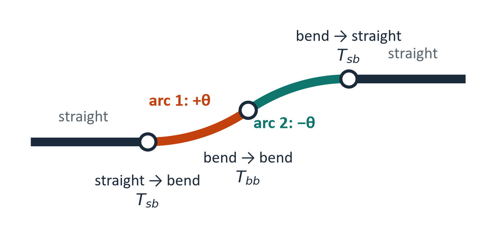
Per S-bend: two arcs (total angle 2θ), two straight-bend transitions and one bend-bend transition.
Component
Unit
Where it happens
Bending loss αb
dB/90°
Along the curved arcs, in proportion to the angle
Straight-bend transition Tsb
dB/trans.
At the two junctions between straight and bend
Bend-bend transition Tbb
dB/trans.
Where the curvature reverses
Where a bent waveguide loses light
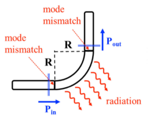
(a) 90° circular bend: mode mismatch at the junctions, radiation on the outer side.
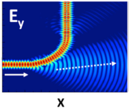
(c) FDTD Ey field: radiation leaves the guide at the junction.
Figure: M. Bahadori, M. Nikdast, Q. Cheng, K. Bergman, J. Lightwave Technol. 37(13), 3044 (2019), Fig. 1(a),(c).
Radiation is a continuous leak along the arc, so it scales with angle. Mode mismatch is a lumped loss at each junction, so it counts per transition. The paper notes that the main losses happen at the input and output connections, where the curvature changes suddenly.
Why the bend radiates
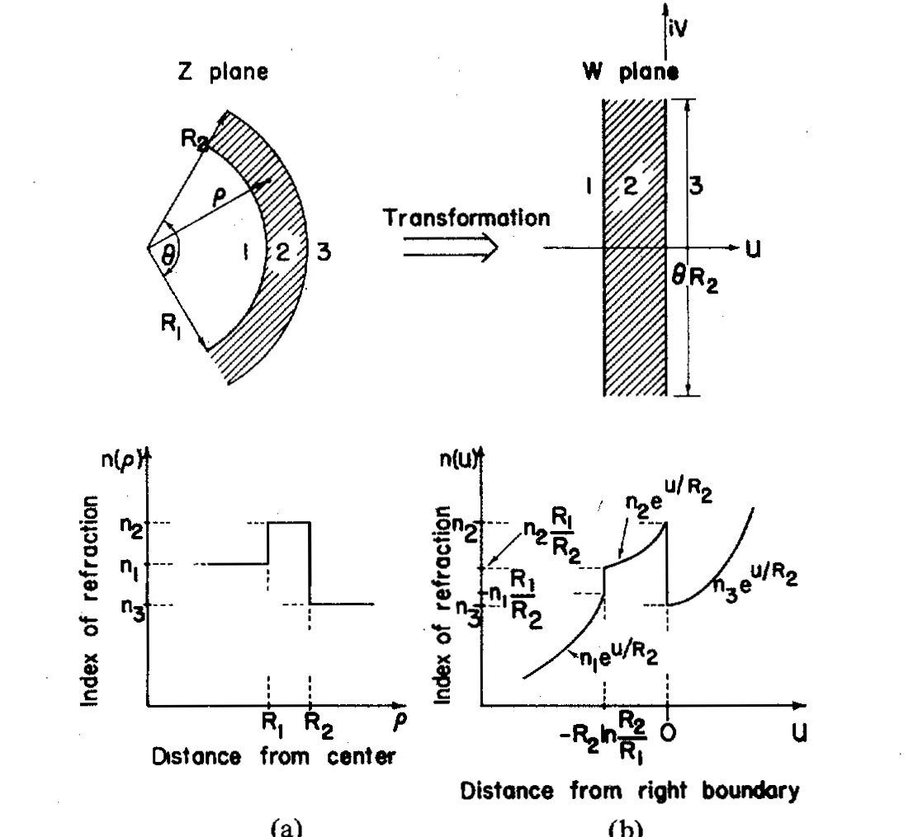
M. Heiblum, J. H. Harris, IEEE J. Quantum Electron. QE-11(2), 75 (1975), Fig. 1.
A conformal transformation maps the curved guide onto an equivalent straight guide. The price is a tilted index profile:
\[n(u) = n\,e^{u/R}\]
Far enough on the outer side, the tilted cladding index exceeds the mode's effective index. There the field stops decaying and propagates away, like light tunnelling out of a prism coupler.
Equivalent picture: the phase front rotates rigidly, so the outer part of the field would have to travel faster than \(c/n_\text{clad}\).
A smaller R gives a steeper tilt, which brings the radiation point closer to the core. The loss therefore grows roughly as \(e^{-CR}\) as R shrinks.
Simulated modes: straight vs. bent
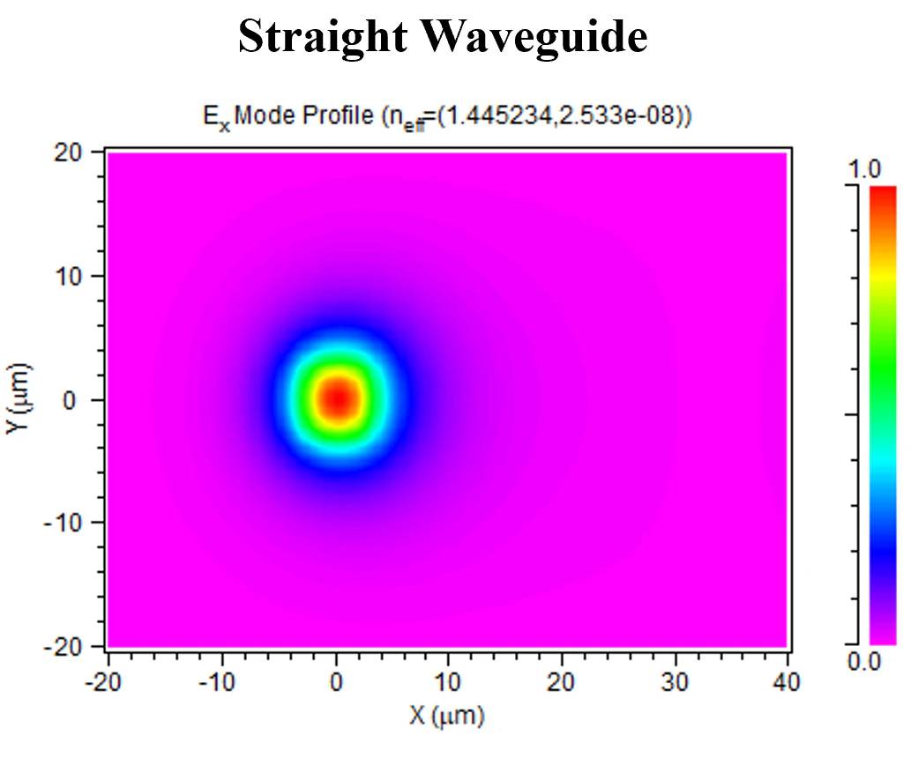
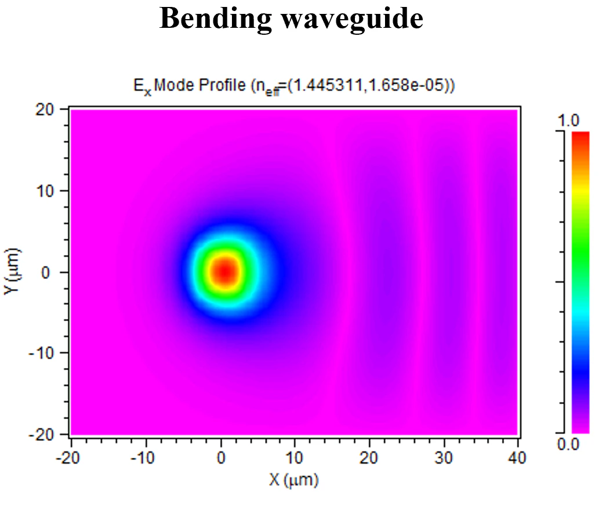
Mode-solver results for the same low-contrast waveguide.
The bend mode peak moves toward the outer side (+x). Straight and bend modes no longer overlap perfectly, which causes transition loss.
Faint arcs appear on the outer side (x > 15 µm). This is the radiating field, which causes bending loss.
The imaginary part of \(n_\text{eff}\) rises from \(2.5\times10^{-8}\) to \(1.66\times10^{-5}\).
Assuming λ = 1550 nm. Multiply by the arc length to get dB per 90°.
Transition losses: mode mismatch
At a junction the incoming mode must excite the next section's mode. Only the overlapping part couples:
\[\eta = \left|\int E_1(x)\,E_2(x)\,dx\right|^2, \qquad T = -10\log_{10}\eta\]
Straight-bend transition (Tsb): the bend mode leans outward; the straight mode is centred. Twice per S-bend. Reduced by a lateral offset at the junction or by Euler (clothoid) curves.
Bend-bend transition (Tbb): the mode leans to one side in arc 1 and to the other side in arc 2, so the relative shift doubles. Once per S-bend.
S-bend는 곡률 방향이 반대인 두 circular arc(각각 각도 θ)로 waveguide를 옆으로 이동시키므로 전체 bend angle은 2θ입니다.
S-bend 하나: arc 두 개 (전체 각도 2θ), straight-bend transition 두 번, bend-bend transition 한 번.
성분
단위
발생 위치
Bending loss αb
dB/90°
곡선 arc를 따라, 각도에 비례
Straight-bend transition Tsb
dB/trans.
straight와 bend가 만나는 두 junction
Bend-bend transition Tbb
dB/trans.
곡률 방향이 바뀌는 지점
Bent waveguide는 어디서 빛을 잃는가
(a) 90° circular bend: junction의 mode mismatch와 바깥쪽 radiation.(c) FDTD Ey field: junction에서 radiation이 waveguide 밖으로 빠져나갑니다.
그림: M. Bahadori, M. Nikdast, Q. Cheng, K. Bergman, J. Lightwave Technol. 37(13), 3044 (2019), Fig. 1(a),(c).
radiation은 arc 전체에서 연속적으로 새는 loss이므로 각도에 비례합니다. mode mismatch는 각 junction에서 한 번씩 생기는 loss이므로 transition 수로 셉니다. 이 논문은 곡률이 갑자기 바뀌는 입력·출력 connection에서 주된 loss가 생긴다고 설명합니다.
Bend에서 radiation이 생기는 이유
M. Heiblum, J. H. Harris, IEEE J. Quantum Electron. QE-11(2), 75 (1975), Fig. 1.
conformal transformation은 휘어진 waveguide를 등가의 straight waveguide로 바꿔 줍니다. 그 대가로 굴절률 분포가 기울어집니다:
\[n(u) = n\,e^{u/R}\]
바깥쪽으로 충분히 멀어지면 기울어진 cladding 굴절률이 mode의 effective index보다 커집니다. 그 지점부터 field가 감쇠하지 않고 퍼져 나가며, prism coupler에서 빛이 tunneling으로 빠져나가는 것과 같습니다.
같은 현상을 다르게 보면: phase front가 강체처럼 회전하므로, field의 바깥 부분은 \(c/n_\text{clad}\)보다 빨리 움직여야 합니다.
R이 작을수록 기울기가 커져 radiation 지점이 core에 가까워집니다. 그래서 R이 줄면 loss가 대략 \(e^{-CR}\)처럼 커집니다.
Simulation 결과: straight mode와 bend mode
같은 low-contrast waveguide에 대한 mode solver 결과.
bend mode의 peak가 바깥쪽(+x)으로 이동합니다. straight mode와 bend mode가 완전히 겹치지 않으므로 transition loss가 생깁니다.
바깥쪽(x > 15 µm)에 희미한 호 모양 무늬가 보입니다. 이것이 방사되는 field이며 bending loss의 원인입니다.
junction에서는 들어오는 mode가 다음 구간의 mode를 여기해야 합니다. 겹치는 부분만 전달됩니다:
\[\eta = \left|\int E_1(x)\,E_2(x)\,dx\right|^2, \qquad T = -10\log_{10}\eta\]
Straight-bend transition (Tsb): bend mode는 바깥쪽으로 치우치고 straight mode는 가운데에 있습니다. S-bend 하나에 두 번 생깁니다. junction에 lateral offset을 주거나 Euler (clothoid) curve를 쓰면 줄일 수 있습니다.
Bend-bend transition (Tbb): mode가 arc 1에서는 한쪽으로, arc 2에서는 반대쪽으로 치우치므로 상대 이동량이 두 배가 됩니다. S-bend 하나에 한 번 생깁니다.
Each unit holds two S-bends (one up, one back down), so the patterns contain n_S = 2, 4, 6, 8 S-bends.
All patterns share the same facets and input/output straights, so coupling loss and straight propagation loss form one common constant C. Small differences in path length are corrected with α from the cut-back.
Step 1: one angle gives the loss per S-bend
\[\mathrm{IL} = C + n_S\,L_\text{SB}(\theta)\]
θ = 30°: IL = 2.99, 4.59, 6.21, 7.81 dB for n_S = 2, 4, 6, 8.
A straight-line fit of IL against nS gives
This is the total per S-bend. αb and Tsb are still mixed together.
Why one angle is not enough
\(L_\text{SB}(30^\circ) = 0.667\,\alpha_b + 4T_\text{sb}\) is one equation with two unknowns. (0.30, 0.151) fits, but so do (0, 0.201) and (0.6, 0.101). In matrix language the angle column and the transition column are proportional, so \(A^\mathsf{T}A\) is singular. More patterns of the same kind do not help; a different experiment does.
Fix: make the same pattern family with S-bends of θ = 10°, 20° and 30°. The bending term changes with angle; the transition term does not.
Step 2: repeat the fit for every angle
Each angle family gives its own slope L_SB(θ); the intercepts agree (same facets).
The derivation from Part 6 is unchanged: \(\hat x = (A^\mathsf{T}A)^{-1}A^\mathsf{T}b\), now with a 3 × 3 matrix. In practice Excel LINEST, MATLAB A\b or Python numpy.linalg.lstsq solve exactly this problem.
Identifiability
rank(A) = n: \(A^\mathsf{T}A\) is invertible and \(\hat x\) is unique.
rank(A) < n: \(A^\mathsf{T}A\) is singular; the parameters cannot be identified. This is the one-angle case.
Nearly dependent columns (e.g. 29°, 30°, 31°): \(A^\mathsf{T}A\) is ill-conditioned and noise is amplified. Spread the x values.
Worked example: all 12 patterns
The two-stage result from Part 8 is close but not identical, because the one-shot fit forces a single common C while the per-angle fits each had their own intercept. Both are valid estimates within the noise.
Judging the fit
Residuals of the 12-pattern fit: small and without a trend. One large bar would point to a bad facet or a misaligned measurement.
Part 6의 유도는 그대로입니다: \(\hat x = (A^\mathsf{T}A)^{-1}A^\mathsf{T}b\), 이제 3 × 3 행렬일 뿐입니다. 실제로는 Excel LINEST, MATLAB A\b, Python numpy.linalg.lstsq가 정확히 이 문제를 풉니다.
M. Heiblum and J. H. Harris, "Analysis of curved optical waveguides by conformal transformation," IEEE J. Quantum Electron. QE-11(2), 75–83 (1975).
M. Bahadori, M. Nikdast, Q. Cheng, K. Bergman, "Universal design of waveguide bends in silicon-on-insulator photonics platform," J. Lightwave Technol. 37(13), 3044–3054 (2019).
M. Heiblum and J. H. Harris, "Analysis of curved optical waveguides by conformal transformation," IEEE J. Quantum Electron. QE-11(2), 75–83 (1975).
M. Bahadori, M. Nikdast, Q. Cheng, K. Bergman, "Universal design of waveguide bends in silicon-on-insulator photonics platform," J. Lightwave Technol. 37(13), 3044–3054 (2019).
Convert between linear and logarithmic units and add up a loss budget. Tolerance: ±0.05 dB (±2 % for mW).선형 단위와 로그 단위를 변환하고 loss budget을 계산합니다. 허용 오차: ±0.05 dB (mW는 ±2 %).
(a) Fiber on the lid glass.(a) Fiber가 lid glass 위.Light spreads in the thick glass lid and shows broad horizontal fringes; there is no guided mode. Move the fiber down.두꺼운 glass lid에 빛이 퍼져 넓은 가로 무늬가 보이며 guided mode는 없습니다. fiber를 아래로 내리세요.
lid glass
waveguide layer
Si substrate
core
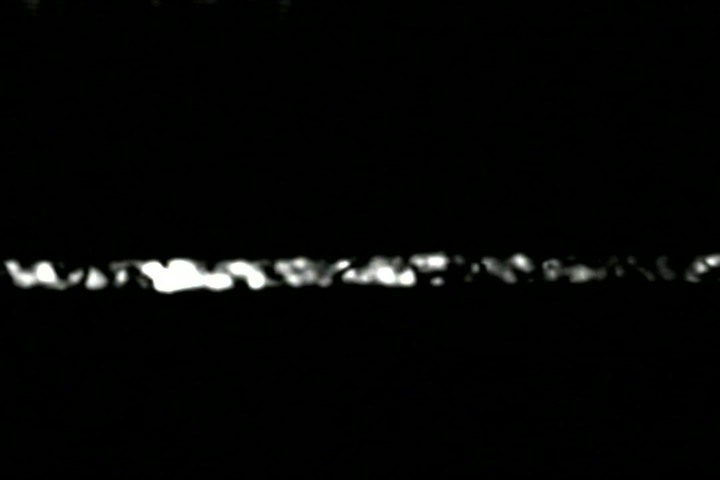
IR camera
(b) Fiber on the waveguide layer, beside the core.(b) Fiber가 waveguide layer 높이, core 옆.Light is trapped in the slab (cladding) layer and appears as a bright horizontal line. The height is right: scan sideways until the line collapses into one spot.slab(cladding) 층에 갇힌 빛이 밝은 가로 선으로 보입니다. 높이는 맞았으므로 선이 하나의 점으로 모일 때까지 좌우로 움직이세요.
lid glass
waveguide layer
Si substrate
core
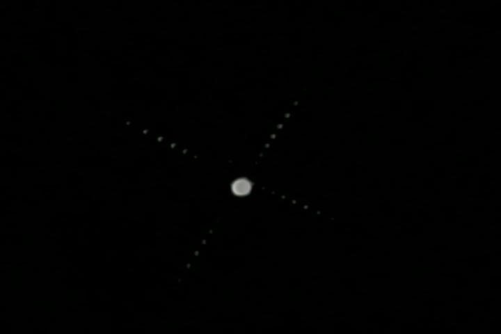
IR camera
(c) Fiber on the core: coupled.(c) Fiber가 core 위: coupling 성공.A single bright spot is the guided mode. Fine-tune x, y and z until it is brightest.하나의 밝은 점이 guided mode입니다. x, y, z를 미세 조정해 가장 밝게 맞추세요.
lid glass
waveguide layer
Si substrate
core
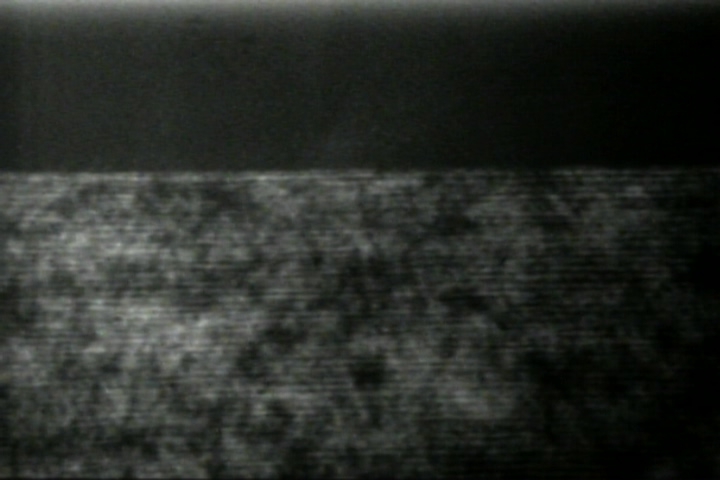
IR camera
(d) Fiber on the silicon substrate.(d) Fiber가 silicon substrate 위.Light scatters in the substrate and glows diffusely below the layers. Move the fiber up.substrate에서 빛이 산란되어 층 아래쪽이 흐릿하게 빛납니다. fiber를 위로 올리세요.
Exercise 2
Insertion loss from meter readings측정값으로부터 insertion loss 구하기
A reference (fiber-to-fiber) reading and a DUT reading are given, sometimes in mW/µW, sometimes in dBm. Compute the insertion loss. Tolerance: ±0.05 dB.reference (fiber-to-fiber) 측정값과 DUT 측정값이 mW/µW 또는 dBm으로 주어집니다. insertion loss를 계산하세요. 허용 오차: ±0.05 dB.
IL [dB] = P_ref [dBm] − P_DUT [dBm]
Worked solution
Exercise 3
Cut-back without measurement error측정 오차가 없는 cut-back
A chip of length L₀ was measured, then cleaved asymmetrically and both pieces were measured. There is no measurement error: any two points give the exact answer. Find the propagation loss α and the coupling loss CL. Tolerance: ±0.01.길이 L₀인 chip을 측정한 뒤 비대칭으로 cleave하고 두 조각을 다시 측정했습니다. 측정 오차가 없으므로 아무 두 점이나 사용해도 정확한 답이 나옵니다. propagation loss α와 coupling loss CL을 구하세요. 허용 오차: ±0.01.
IL = α · L + 2 · CL
Worked solution
Exercise 5
Least squares playgroundLeast squares 체험
Explore how measurement noise and the number and spread of chip lengths affect the extracted α and CL. Compare a two-point estimate (first and last point only) with the least-squares fit.측정 noise, chip 길이의 개수와 범위가 추출한 α와 CL에 어떤 영향을 주는지 살펴봅니다. 두 점(처음과 마지막 점)만 쓴 추정과 least-squares fit을 비교해 보세요.
True values참값: α = 0.20 dB/cm, CL = 0.50 dB/facet
measured측정값least-squares fittwo-point estimate두 점 추정true line참값 직선residuals
Normal equations for the current data현재 데이터의 normal equations
Exercise 4
Cut-back with measurement error측정 오차가 있는 cut-back
Same experiment, but each insertion loss now carries a random measurement error. The three points do not lie on one line, so use linear regression (least squares). Your answer passes if it is close to the least-squares solution of the given data (α within ±0.01 dB/cm, CL within ±0.02 dB).같은 실험이지만 각 insertion loss에 무작위 측정 오차가 들어 있습니다. 세 점이 한 직선 위에 있지 않으므로 linear regression (least squares)을 사용하세요. 주어진 데이터의 least-squares 해에 가까우면 정답입니다 (α ±0.01 dB/cm, CL ±0.02 dB).
AᵀA x̂ = Aᵀb, A = [Lᵢ 1], x = [α 2·CL]ᵀ, b = [ILᵢ]
Worked solution (normal equations)
Mode overlap explorerMode overlap 탐색기
–Tsb: straight → bend (shift d)
–Tbb: bend → bend (shift 2d)
–Tbb / Tsb
Gaussian modes: η = exp(−d²/w²). Tighter bends shift the mode further; wider modes tolerate the same shift better. For Gaussian modes the bend-bend loss is about 4× Tsb; this course uses the simpler assumption Tbb = 2·Tsb.Gaussian mode: η = exp(−d²/w²). bend가 급할수록 mode가 더 많이 이동하고, mode 폭이 넓을수록 같은 shift에 덜 민감합니다. Gaussian mode에서는 bend-bend loss가 Tsb의 약 4배이지만, 이 강의에서는 단순화하여 Tbb = 2·Tsb로 가정합니다.
S-bend loss calculatorS-bend loss 계산기
–bending αb·2θ/90°
–transitions 2Tsb + Tbb
–LSB per S-bend
Exercise 6
S-bend loss from one angle (Step 1)한 각도로 S-bend loss 구하기 (Step 1)
Test patterns input — straight — {S-bend — short straight — S-bend — short straight} × N — straight — output with one fixed arc angle θ contain nS = 2N = 2, 4, 6, 8 S-bends. The insertion losses below are already corrected for straight-waveguide propagation, so all patterns share one constant C (coupling + straights). Find the loss per S-bend LSB and C.test pattern input — straight — {S-bend — short straight — S-bend — short straight} × N — straight — output은 하나의 arc angle θ로 만들어졌고 nS = 2N = 2, 4, 6, 8개의 S-bend를 포함합니다. 아래 insertion loss는 straight waveguide의 propagation loss를 이미 보정한 값이므로, 모든 pattern이 하나의 상수 C (coupling + straight 구간)를 공유합니다. S-bend 하나당 loss LSB와 C를 구하세요.
IL = C + n_S · L_SB, L_SB = α_b·(2θ/90°) + 2·T_sb + T_bb
Worked solution
Exercise 7
Separating bending and transition losses (Steps 2–3)bending loss와 transition loss 분리하기 (Steps 2–3)
The same pattern family was made with S-bends of three arc angles, θ = 10°, 20° and 30° (each S-bend = two arcs of θ, total angle 2θ), each with nS = 2, 4, 6, 8 S-bends: 12 patterns. Assume Tbb = 2·Tsb; the insertion losses are corrected for straight-waveguide propagation. Step 2: fit IL vs. nS separately for each angle → LSB(10°), LSB(20°), LSB(30°). Step 3: fit LSB vs. 2θ/90° → slope = αb, intercept = 2·Tsb + Tbb = 4·Tsb.
(Alternatively solve all 12 patterns at once with 3-unknown least squares; both answers are accepted.)같은 pattern family를 세 가지 arc angle θ = 10°, 20°, 30°의 S-bend로 만들었습니다 (S-bend 하나 = 각도 θ인 arc 두 개, 전체 각도 2θ). 각 각도마다 nS = 2, 4, 6, 8개이므로 모두 12개 pattern입니다. Tbb = 2·Tsb로 가정하며, insertion loss는 straight waveguide의 propagation loss를 보정한 값입니다. Step 2: 각도별로 IL vs. nS를 따로 fit → LSB(10°), LSB(20°), LSB(30°). Step 3: LSB vs. 2θ/90°를 fit → slope = αb, intercept = 2·Tsb + Tbb = 4·Tsb.
(12개 pattern을 미지수 3개의 least squares로 한 번에 풀어도 됩니다. 두 방법 모두 정답으로 인정합니다.)
Step 2: IL = C + n_S · L_SB(θ) | Step 3: L_SB(θ) = α_b · (2θ/90°) + 4·T_sb
Worked solution (Steps 2–3 and the one-shot 3 × 3 least squares)Worked solution (Steps 2–3 및 한 번에 푸는 3 × 3 least squares)